Integrated Executive Dashboard: the whole company on one page
This guide explains what each part of the dashboard shows, how to read it and which question it answers. Every number in the examples comes from the same data the dashboard displays.
At a glance
“Sample Co.” imports industrial equipment and distributes it through four branches: Tehran, Isfahan, Shiraz and Mashhad. Before this dashboard, the CEO received separate weekly reports from sales, warehousing, procurement and finance. They arrived late, and their numbers did not always agree.
The integrated dashboard brings those four areas together on one page, from a single data source:
Who is it for? First, the CEO and the board, who want to see the state of the whole company in a few minutes. Then the sales, procurement, warehouse and finance managers, who each find the detail for their own area on the same page and work from the same numbers as everyone else.
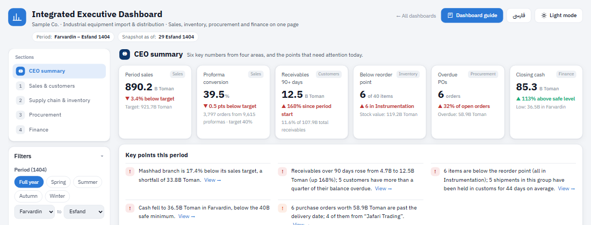
Quick start
Filters
The left-hand column (on a phone, the “Filters” button at the top of the page) holds three filters. The number of active filters appears next to the heading, and “Clear all” resets the dashboard to its default view (full year, all branches, all product groups).
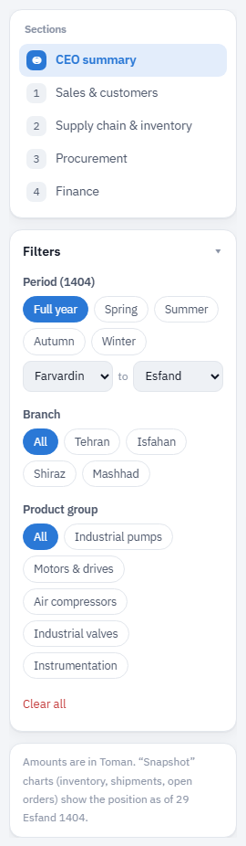
- Period (1404): pick any range with the season buttons or the two “from month / to month” lists.
- Branch: Tehran, Isfahan, Shiraz or Mashhad.
- Product group: industrial pumps, motors & drives, air compressors, industrial valves, instrumentation.
Some sections are “snapshots” (today’s inventory, for example), so a period does not apply to them. Wherever a filter has no effect, a small ⓘ note under the chart title explains why. The table below summarizes this:
| Section | Period | Branch | Product group |
|---|---|---|---|
| Summary cards and key points | ✓ | ✓ | ✓ |
| Monthly sales vs. target | ✓ | ✓ | ✓ |
| Branch target achievement | ✓ | Highlight | ✓ |
| Proforma funnel | ✓ | ✓ | ✓ |
| Receivables aging | ✓ | ✓ | — |
| Customer table | ✓ | ✓ | Sales column only |
| Inventory value and shortage alerts | — | ✓ | ✓ |
| Goods in transit | — | ✓ | ✓ |
| Purchase orders by status | ✓ | ✓ | ✓ |
| Open order delivery schedule | — | ✓ | ✓ |
| Cash balance and cash flow | ✓ | — | — |
| From sales to net profit | ✓ | ✓ | — |
| Branch profitability | ✓ | Highlight | — |
Summary cards
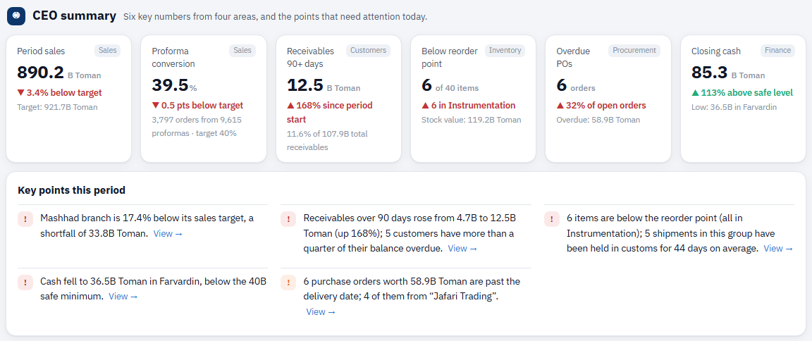
What does it show? Six numbers that sum up the health of the four areas: period sales, proforma conversion rate, receivables over 90 days, items below the reorder point, overdue purchase orders and closing cash. The grey tag in the corner of each card names its area, and clicking a card takes you to the related chart.
How do I read it? The large number is the current value. The colored line below it is the comparison: against target, against the start of the period or against the safe level. ▲ and ▼ show the direction of change, and the color shows whether that change is good or bad; that is why growth in overdue receivables appears as a red ▲.
Key points this period
What does it show? Three to five short sentences that the dashboard writes from the data itself, like a briefing an analyst would prepare for the CEO. Every sentence changes with the filters.
How do I read it? A red marker means a problem that needs follow-up, orange is a warning and green means things are fine. Points are sorted by importance, and the “View” link goes to the chart behind each one.
Monthly sales vs. target
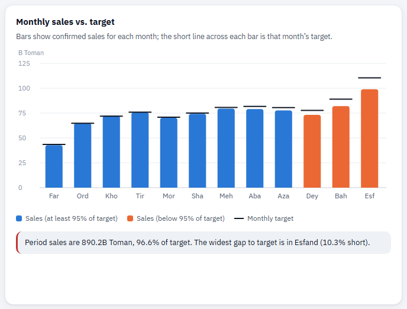
What does it show? Confirmed sales for each month in the selected period, next to that month’s target. Months run from left to right (Farvardin on the left).
How do I read it? If the top of a bar sits below the target line, that month fell short. Bars that reached less than 95% of target turn orange so they stand out immediately. Hover over a bar to see sales, target and achievement. The dip in Farvardin (the Nowruz holidays) and the peak in Esfand (pre-year-end buying) are the market’s normal seasonal pattern.
Sales target achievement by branch
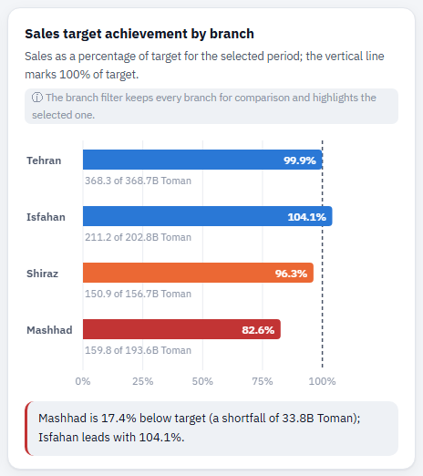
What does it show? Each branch’s sales as a percentage of its target for the selected period, with sales and target amounts under each bar.
How do I read it? A blue bar means the branch reached at least 97% of target, orange means 90–97% and red means below 90%. If you select a branch in the filter, the others fade but stay in place for comparison.
Proforma-to-invoice funnel
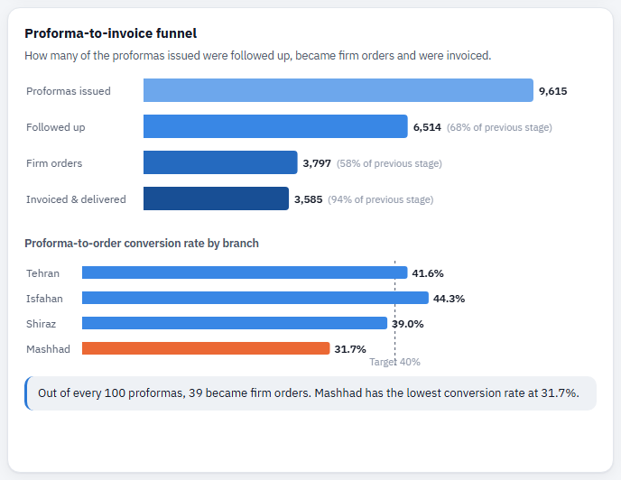
What does it show? Of the proformas issued, how many were followed up, how many became firm orders and how many were invoiced and delivered. The small chart below compares each branch’s conversion rate with the 40% target.
How do I read it? The figure in brackets is the share that made it through from the previous stage. The biggest drop is usually between “Followed up” and “Firm orders”, where price, stock availability and the salesperson’s follow-up make the difference.
Receivables aging
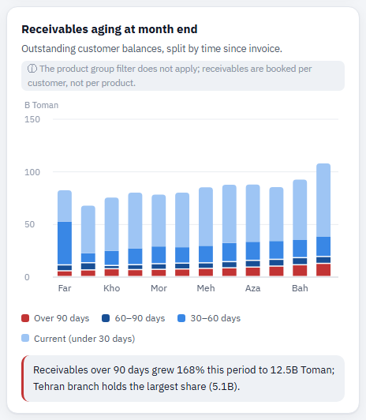
What does it show? The company’s total receivables from customers at the end of each month, split into four buckets by time since invoice: current (under 30 days), 30–60, 60–90 and over 90 days.
How do I read it? The red segment at the bottom of each bar is receivables over 90 days, the riskiest part and the most likely to become bad debt. If this segment grows month after month, the quality of receivables is deteriorating even when the total stays flat. The product group filter has no effect here, because receivables are booked per customer.
Customer table: sales, credit and receivables
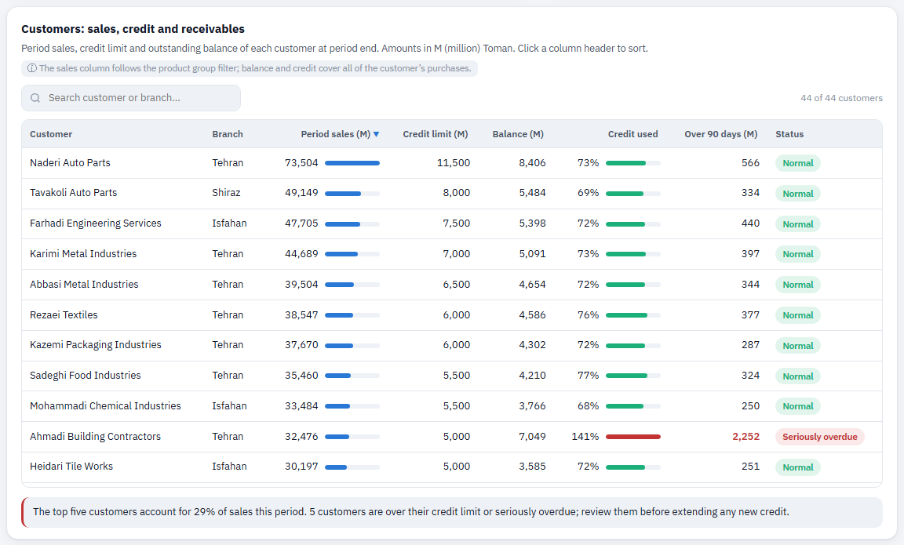
What does it show? For each customer: period sales, credit limit, outstanding balance at period end, credit used, the amount over 90 days, and status.
How do I read it? Click a column header to sort (click again to reverse the order), and use the search box to find a customer or branch. The small “Credit used” bar is green up to 85%, orange up to 100% and red above that. The status tag is one of “Normal”, “Near limit”, “Over limit” and “Seriously overdue” (more than a quarter of the balance is over 90 days).
Inventory value and shortage alerts
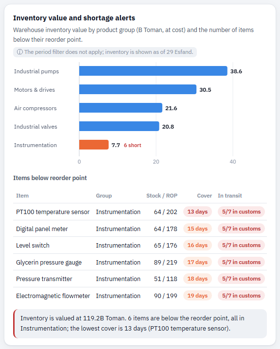
What does it show? The value of warehouse inventory for each product group at cost, and the list of items whose stock has fallen below the “reorder point”.
How do I read it? An orange bar means that group has items running short. In the list below, “Cover” tells you how many days the stock will last at the current sales rate, and the “In transit” column shows whether a shipment for that group is on its way and where it is held up.
Goods in transit by stage
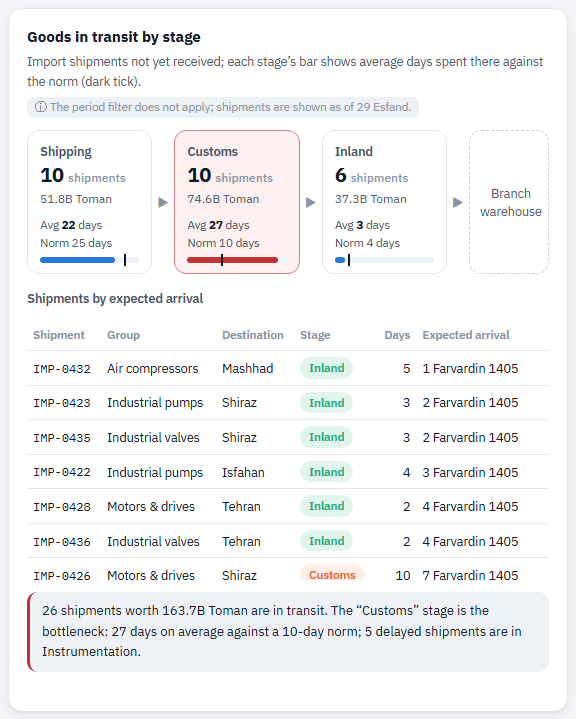
What does it show? Import shipments that have not yet reached the warehouse, in three stages: “Shipping” (international freight), “Customs” (clearance) and “Inland” (domestic haulage to the warehouse). Each stage shows the number of shipments, their value and the average number of days spent there.
How do I read it? The bar at the bottom of each box is the average time in that stage, and the dark vertical tick on it is the stage’s “norm”. If the average exceeds the norm by more than 30%, the box turns red. In the table below, shipments that have spent more than one and a half times the norm in their stage get a red tag.
Purchase orders by status
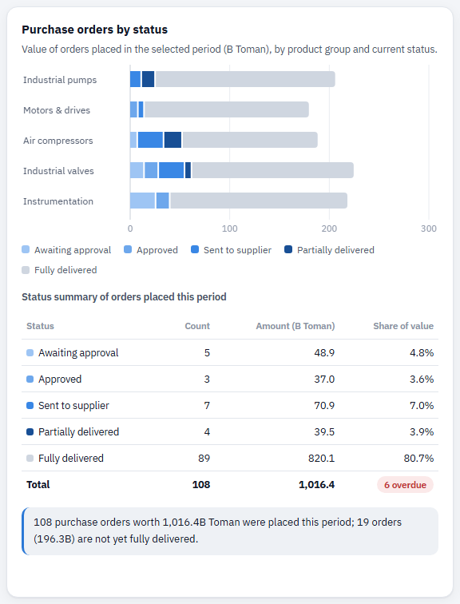
What does it show? The value of purchase orders placed in the selected period for each product group, split by current status: awaiting approval, approved, sent to supplier, partially delivered and fully delivered.
How do I read it? The grey segment is closed orders (fully delivered) and the blue segments are open orders; the darker the blue, the closer the order is to delivery. Hover over a segment to see its value and share.
Open order delivery schedule
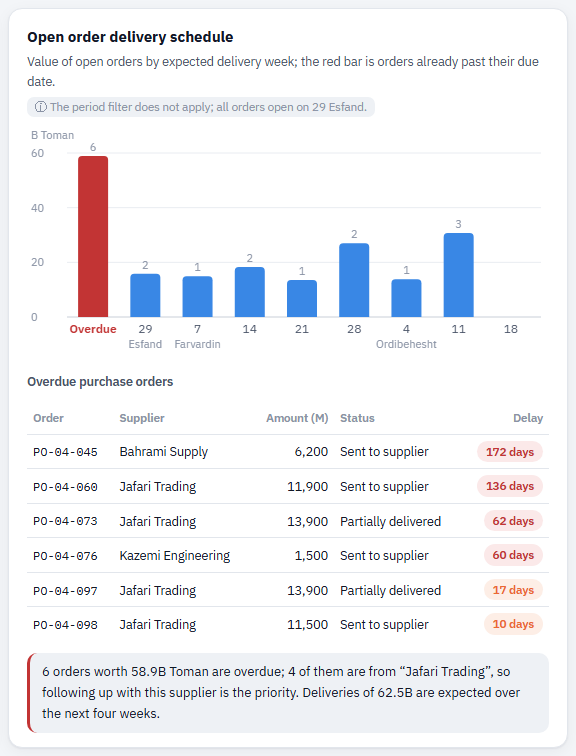
What does it show? All open orders, grouped by the week their delivery is expected. The first bar (on the left) is orders already past their due date; below the chart, the same overdue orders are listed with the number of days they are late.
How do I read it? The number above each bar is the order count, and the bar’s height is the value. Under each bar is the first day of that week. If most overdue orders come from one supplier, the problem lies with that supplier, not with the procurement team.
Cash balance and monthly cash flow
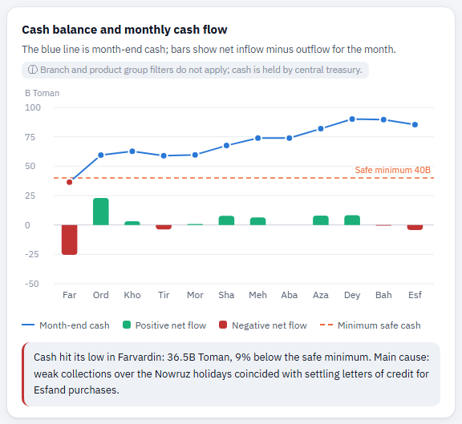
What does it show? The company’s cash balance at the end of each month (blue line) and that month’s net cash flow, i.e. collections from customers minus payments (green or red bars). The dashed orange line is the “minimum safe cash” level (40B Toman).
How do I read it? Any point that drops below the dashed line turns red, meaning the company had no safety margin for essential payments that month. This chart ignores the branch and product group filters, because cash is held by central treasury.
From sales to net profit
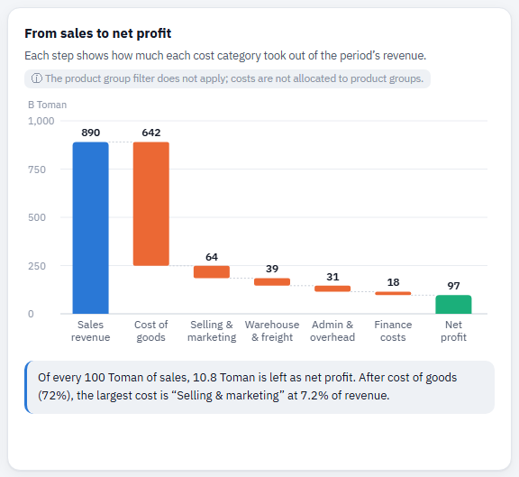
What does it show? Sales revenue for the period (the blue bar on the left), then each cost category as an orange step down (cost of goods sold, selling and marketing, warehousing and freight, admin and overhead, finance costs), and finally net profit (green bar).
How do I read it? The height of each step is the size of that cost; the taller the step, the bigger the share of revenue it consumed. Use the branch filter to see the same picture for each branch separately.
Branch profitability
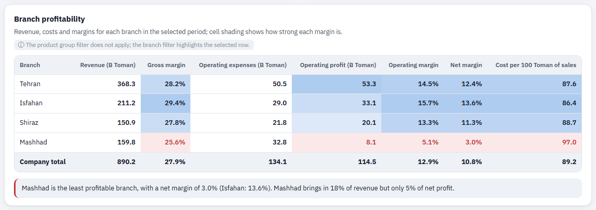
What does it show? For each branch: revenue, gross margin, operating expenses, operating profit, operating margin, net margin and “cost per 100 Toman of sales”. The last row is the company total.
How do I read it? In the margin and profit columns, a deeper blue is better and a red cell marks the weakest branch in that column. The “cost per 100 Toman” column works the other way round: lower is better.
Frequently asked questions
Where do the numbers come from, and how often are they updated?
In the production version, the dashboard reads from the accounting software, the warehouse system and the import files every night.
Why don’t the inventory and shipment charts change when I change the period?
Because they are “snapshots”: inventory and shipments in transit as of 29 Esfand. The ⓘ note under each chart title says which filter does not apply to it and why.
How is the “reorder point” calculated?
The reorder point is the stock level at which a new order must be placed so the item does not run out before the next shipment arrives. Here it is set at roughly one and a half months of each item’s usage in each branch, because imports typically take about six weeks.
How is each month’s sales target set?
The annual target is set from last year’s sales plus planned growth, then spread across months and branches according to the market’s seasonal pattern (the Farvardin dip and the Esfand peak).
Can I use the dashboard on my phone?
Yes. On a phone, the filters collapse under a “Filters” button and the sections stack one below the other. Wide tables can be scrolled horizontally.
How do I switch to dark mode?
By default the dashboard follows your device setting. You can switch it manually with the “Light mode / Dark mode” button at the top of the page.
Glossary
- Proforma
- A formal price quotation sent to a customer before purchase; it does not yet create a commitment.
- Conversion rate
- The percentage of proformas that turned into firm orders.
- Target achievement
- Actual sales as a percentage of the sales target for the same period.
- Credit limit
- The maximum amount a customer is allowed to owe the company.
- Receivables over 90 days
- The part of receivables that is more than 90 days past its invoice date and still uncollected.
- Reorder point (ROP)
- The stock level at which a new purchase order should be placed.
- Stock cover
- The number of days current stock will last at the normal sales rate.
- Stage norm
- The normal time a shipment spends in each stage (shipping 25, customs 10 and inland haulage 4 days).
- Letter of credit
- A payment method for imports in which a bank guarantees payment to the seller; it must be settled when it falls due.
- Gross margin
- The percentage of sales left after deducting the cost of goods sold.
- Net margin
- The percentage of sales left as profit after deducting all costs (goods, operating and finance).
- Minimum safe cash
- The lowest cash balance the company must hold to cover one month of essential payments (payroll, loan installments, levies).